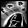

+ Barbarian +
THE BARBARIAN
The Median XL barbarian class is the toughest melee character in the game, but also has good ranged attack capability in his throwing skills and ancestral spirits.

BACKGROUND OF THE MEDIAN XL BARBARIAN
The tribes of the Arreat Highlands guard an ancient secret from the dawn of history. The Worldstone, created by Inarius to protect the world of Sanctuary against overt angelic or demonic influence, has often been the target of attacks by mortal emissaries of the Burning Hells looking to destroy the barrier. Should the Worldstone fall, all of Sanctuary would be in grave danger.
So much for the commonly accepted theory. Some say the Worldstone may have a darker side. Inarius did not want an empowered third party in the Eternal War. What he really wanted to create was a world of worshippers. The offspring of an angel and demon, the first humans - the nephalem - possessed certain powers that could prove to be a threat to the dominion of Inarius.
To suppress these awakening powers, Inarius imbued the Worldstone with a dampening field that would forever limit the innate magical abilities of humans. Within a few generations, the era of the nephalem was over and the Old Ages begun.
Inarius had been very thorough. Only the strongest wills could muster more than simple parlour tricks. Individuals with some lingering power grouped together to colonise the ley lines, building great towers and circles of stone to channel the remaning energines. At these sacred places, the first formal mage clans were founded - the primeval Vizjerei, Ennead and Annuit.
Many millennia later, the stalemate was shattered by the covert actions of mankind's mother goddess, Lilith, who sparked the extinct nephalem flame in a small group of humans. The edyrem rampaged over the Cult of the Trinue, her unwilling servants, but this was a price she was willing to pay if they would proceed to take out her former consort and mortal adversary - Inarius.
But she had underestimated the edyrem and was destroyed by her own creations. Inarius and his religion of treachery fell not long afterwards, but not before the actions of the edyrem drew the attention of the celestial and infernal forces to Sanctuary.
The intervention of Tyrael narrowly prevented the complete destruction of Sanctuary. The warring sides signed a blood pact to never set foot or claw on Sanctuary again until humanity had grown and made its own choice in the Eternal War. It should come as no surprise that the forces of Hell quickly found a way around the pact, while the armies of Heaven - now led by rising star Imperius, who never had much love for mankind - remained stoically at a distance.
It is believed that the barbarian people, more than any Eastern or Western loremaster, know the true history of Sanctuary. Still they choose to protect the Worldstone and its crippling antimagic field. Increasingly desperate attempts have been made to reach the Worlstone and shatter it, from ragtag armies of farmers and citizens who lost everything in a demonic attack to an organised strike by the paladins of the Silver Hand, who are usually not known as proponents of godless magic.
Perhaps the barbarians believe that the nephalem are their gods and attempting to seize nephalem power would be an act of blasphemy. Or maybe the tribes have quietly switched sides and are now working with the demonic legions against the rest of humanity...
BASE STATS
Chance to block: 1%
Strength: 30
Dexterity: 20
Vitality: 30 (80 life)
Energy: 5 (5 mana)
+30 life, +10 mana per level
Gains +3 life per point into vitality
Gains +2 mana per point into energy
PREFERRED WEAPONS
The great nephalem king Bul-Kathos brought humanity the secret of steel. After many millennia, barbaric weaponsmithing is at its peak.
Barbarian berserks are known to wield two tribal swords, unleashing a hurricane of blades upon their enemies. Other tribal warriors prefer the striking power of a massive two-handed axe. Although small quantities of these weapons have fallen off the wagon and appeared on the Southern bazaars, they are much too large and heavy for any other mortal to wield. It is said that many tribal weapons are jinxed by the barbaric witchdoctors; many a trader has been seen speeding through the barbarian lands on his last horse, carrying the ridiculously large steel blade that may have bankrupted him to cast it into the fires of Sescheron and lift the curse.
Although some shaman are seen wielding maces and other channelling weapons, most prefer the same weapons as their brothers in arms. To the barbarian tribes, a shaman is first and foremost a warrior and should ever be ready for battle, fighting alongside his spirits. Anything less would be unworthy of one of Bul-Kathos' bloodline.
The hunters of the steppes prefer to engage their prey from a distance. There is no honour in dying by the claws of a frost bear. While seen as valuable members of barbarian society, bringing in the food necessary to keep the barbaric armies in fighting condition, most consider the hunters as less than a warrior, though much more than any Southern soldier. Their heavy throwing axes can deliver silent death from a distance and have enough stopping power to halt an onrushing army.
Class-specific 1h weapon: Sword
Class-specific 1h weapon: Barbarian One-Handed Axe
Class-specific 2h weapon: Barbarian Two-Handed Axe (On hit: Thunderfury)
PREFERRED ARMOUR
Many barbarian warriors grudgingly accept the usefulness of a shield in battle. Getting oneself killed without taking down anyone else is a foolish waste of Arreat's blood.
The barbaric bronze and gilded shields are the ultimate prize for their enemies. Although their weight would cripple a Southern warrior, the base materials fetch a very good price on the bazaars... provided you bring a beast of burden or be prepared to roll the shield back to the civilised world.
Class-specific helm: Barbarian Helm
Class-specific shield: Barbarian Shield
MELEE SKILLS
| Name | Icon | Effect |
|---|---|---|
| Earthquake | The berserk's power shatters the very ground before his might, crushing entire armies and
throwing them into disarray. No one shall stand against the sons of the nephalem. Effect: melee attack that creates a rolling wave of damage |
|
| Bloodhatred | The screaming berserks of Sescheron are a fearsome sight to behold. Their lifespan should
ordinarily be measured in moments, but by drinking the demon blood of their slain foes, they may
gain a kind of unholy immortality in battle. Effect: frenzy attack that rapidly drains life, but steals it back on striking |
|
| Thunder Slam |  |
With a shouted prayer to the storm god, the barbarian slams the ground, creating a rolling
shockwave and deafening thunderclap that smashes through multiple enemies. Effect: melee attack that unleashes a stunning shockwave |
| Shower of Rocks |  | The living spirit of Mount Arreat destroys those who seek to unravel its secrets. Southern
soldiers tell tales of the forces of the mountain itself joining the barbarian counterattack,
crushing the defences of their brothers. Effect: melee attack that pounds the target with boulders |
| Stormblast | One might think a barbarian warrior whetting a perfectly good axe for hours at a time has
nothing better to do. In fact, he is invoking the thunderbird spirit, or in civilised terms,
inducing a high voltage static charge in the metal. Effect: melee attack that emits a zigzagging blast of lightning |
THROWING SKILLS
| Name | Icon | Effect |
|---|---|---|
| Bear Claw |  |
The novice hunter seeks to emulate the mighty claw swipes of the bear in his combat technique,
swiftly stunning and downing the prey in a single strike. Effect: throw an axe that stuns and pierces through enemies |
| Stampede |  |
A single snow buffalo is no match for a trained warrior, but not even an army dares to stand
against a stampeding herd of them. The tribal hunter knows that strength comes in numbers. Effect: throw multiple Bear Claw axes |
| Rebound |  |
Skillful weapon construction and specially crafted mithril blades allow the adept big game
hunter to bank his throws off solid obstacles to strike prey behind cover. Effect: axe that deals no damage, but splits on striking a wall |
| Screaming Eagle | The majestic eagles of the Arreat peaks are the manifestation of air spirits, related to the
spirits that cause dust devils on the southern steppes, often exactly where a raiding party is
invading. Effect: throw an axe in an arc, slowing enemies and reducing damage |
|
| Overkill | An expert barbarian hunter never wastes any of the tribe's hunting axes, often a gift from his
ancestors, biding his time to strike at the perfect moment. Stopping a demonic charge, however,
may require desperate measures. Effect: throw a massive shower of axes over an area |
STANCE SKILLS
| Name | Icon | Effect |
|---|---|---|
| Lion Stance | Eager to prove themselves to the ancestors, young and reckless warriors often charge straight
into the enemy ranks, paying no heed to their own survival. Stance effect: increases damage done and taken |
|
| Snake Stance | The Snake Tribe is known for their underhanded but effective combat techniques. Other tribes
fear having to fight the Snake warriors, for death by poisoning is not a warrior’s death. Stance effect: adds poison to weapon attacks and slows targets |
|
| Bear Stance |  |
The Bear Tribe of Shaman King Koth emphasises brutal and bloody close combat. This combat stance
protects the warrior from blows and the arrows of cowards. Stance effect: increases defence but disables ranged skills when active. Also ignores the physical resistances of the undead. |
| Eagle Stance | The mountain eagles are harbingers of the future. When they flee, war and famine is coming to
Arreat, but when they multiply in number, bright times are ahead. Stance effect: steals life and regenerates lost life |
|
| Wolf Stance |  |
The Wolf Tribe emphasises speed and agility, hunting in packs to strike unexpectedly and bring
down the enemy force in a decisive strike. Stance effect: increases damage, speed and crushing blow |
SHAMAN SKILLS
| Name | Icon | Effect |
|---|---|---|
| Guardian Spirit | The barbarian tribes believe that the spirits of the nephalem watch over them. Legends tell of
armies struck down by a barrage of thrown axes out of nowhere. Effect: guardian spirit with various throwing skills |
|
| Defender Spirit | The barbarian fortresses have been under siege by foreign armies many times, but have never
fallen. The spirits retaliate fiercely against those who invade the barbarian lands. Effect: defender spirit that retaliates with knockback when struck |
|
| Protector Spirit | The spirits of the nephalem will honour the brave and honourable. The blessing of the spirits
enables one warrior of Arreat to battle with the fury of a hundred. Effect: protector spirit with a powerful attack and a Bloodlust spell |
|
| Greater Manifestations | Though many tribal warriors have seen the spirits of nature, only the shamans of the tribe can
call upon these spirits and ask them favours in battle. Passive effect: summon more and stronger spirits |
|
| Spirit Walk |  |
The master shaman briefly turns ethereal and reappears at the location of a living spirit
anchor, usually an unwilling enemy, accompanied by his spirit warriors who follow the astral
channel, blades ready to strike. Effect: teleport self and spirit army towards enemy target |
UTILITY SKILLS
| Name | Icon | Effect |
|---|---|---|
| Wolf Companion | A wise barbarian never hunts alone. The wolves of Arreat are far more perceptive than humans and
will point out the game's weak spots to the apprentice hunter. Effect: spirit wolf that marks targets to take extra damage from strikes |
|
| Ancient Blood | The nephalem bloodline of Bul-Kathos is still strong in today’s tribesmen. Barbarians can
achieve feats of physical strength no mere mortal should be capable of. Passive effect: increases life, attack speed and skill levels |
|
| Fortress | Raiding defenseless farming villages is easy, defending against the inevitable cavalry
counterattack is much harder. The barbarian warbands master the art of erecting basic defenses
in no time at all. Effect: creates a ring of arrow towers |
|
| Spirit Guide | The presence of the spirits of the ancestors in battle doubles the already formidable might of a
trained barbarian warrior and inspires him to great feats of shamanism. Passive effect: being near a spirit or wolf increases damage, defense and cast rate |
|
| Mountain King |  |
Any maniacally flailing barbarian warrior is a dangerous adversary, but only those who master
all aspects of combat will rise to lead their own tribe. Passive effect: percentage bonus to all attributes |
UBERSKILLS
You may choose a single uberskill at character level 90.
| Name | Icon | Effect |
|---|---|---|
| Nephalem Weapons | Although the nephalem are long gone, some of their legacy remained in the form of ancient and
powerful enchanted weapons and the rituals required to create them. Effect: adds fire, cold and lightning damage to the party |
|
| Runemaster |  |
The powers of the barbaric rune priests have been all but forgotten by those not in the inner
circle. Using this ability, the priest of Wo-Thar uses his runic armour to project a force
field. Passive effect: defence bonus for each socketed rune |
| Shamanic Trance | Few tribesmen truly dedicate themselves to the shaman's path. Warriors enjoy a higher status in
barbarian society, but the seidr knows that their survival depends on the power of his
spirits. Effect: increases number and power of summoned spirits |
ENNEAD SKILL
After completing the Ennead Challenge and keeping the Class Charm in the inventory while at character level 90 and above, you can invest points in this skill.
See THIS PAGE for more information about the Ennead Challenge.
| Name | Icon | Effect |
|---|---|---|
| Immortal |  |
Running away is for the weak. A barbarian warrior who runs is easy prey. One who stands his
ground in the face of death may survive, for he is the one the ancestral spirits will
favour. Passive effect: avoids damage when standing still and improves hit recovery |
BLACK ROAD SKILL
After completing the Black Road Challenge and keeping the Class Charm in the inventory, you can invest points in this skill.
See THIS PAGE for more information about the Black Road Challenge.
| Name | Icon | Effect |
|---|---|---|
| Thundergod |  |
A warrior who has his eyes on the throne of his tribe is sent to the summit of Mt. Sescheron to
await the next thunderstorm. If he survives, he may have learned something valuable about the
forces of nature. Effect: adds stun damage and periodically emits stun novas |
INNATE SKILL
Barbarians start with the following skill in their icon list.
| Name | Icon | Effect |
|---|---|---|
| Titan Strike |  |
The spirit of the ancient king Bul-Kathos is said to live on in the very rock of Mount Arreat.
The warrior children of the mountain learn to enter a battle rush, shaking off blows as if their
skin was made of stone. Effect: melee attack that raises strength, dexterity and regenerates lost life |